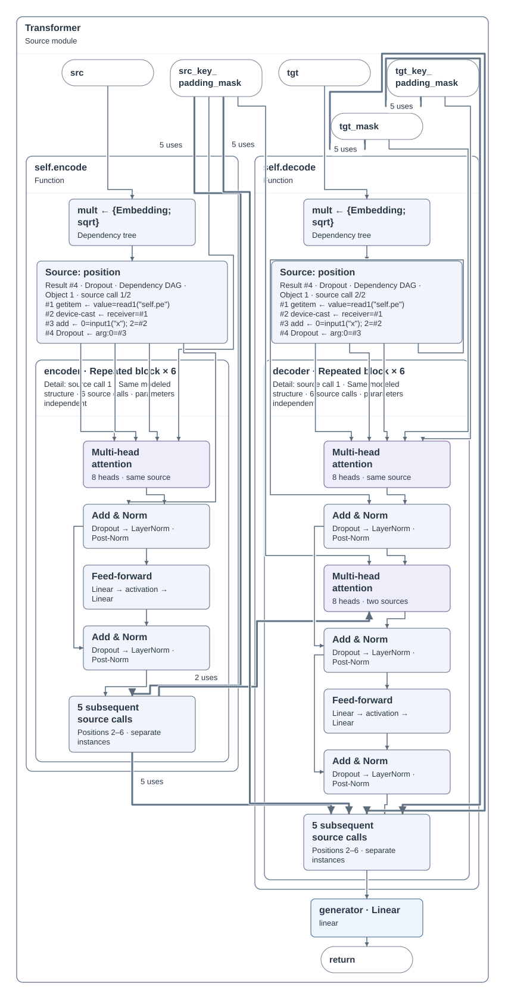
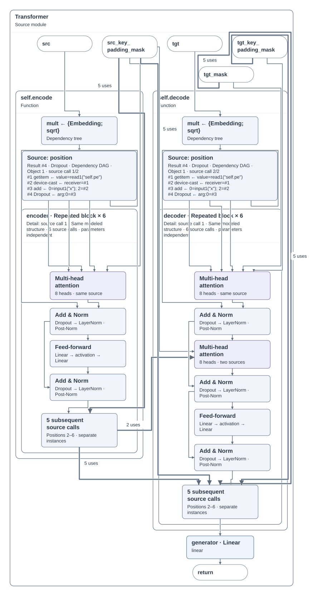
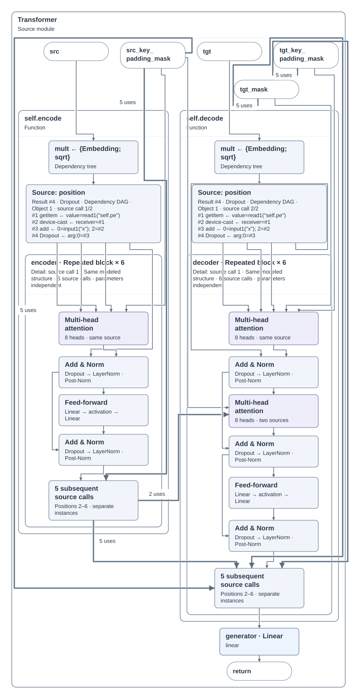

专用折叠参考 · 仅供评估

双目标继续有效：F0 接近专用折叠图；F1 接近专用展开图；均保留更细事实入口。此页是探索对照，未宣称目标收敛。
28 图元 / 37 连接 · 848 × 1676 · 线长 15059.3 · 9 交叉

uniform24 增宽约 3.6%、线长增加约 3.6%；repeat24 高度减少 18px、线长增加约 3.1%。均不采用。
848 × 1676 · 线长 15059.3 · 交叉 9
878.46 × 1665 · 线长 15597.7 · 交叉 8

848 × 1658 · 线长 15526 · 交叉 8

普通连线及束线试算均未改变 Transformer SVG。57 个小案例中 MutableShape 有局部收益；尚未补齐最终阶段摘要目标的验证，因此不提升为正式规则。
四份完整布局通过事实、前沿、摘要/直接目标、原始绑定、XML 路径和文字保留检查。未修改生产规则，未重跑全量回归或展开交互。
审核结果 · 实现与补丁哈希 · 捷径试算 SVG · 57 个小案例原始日志